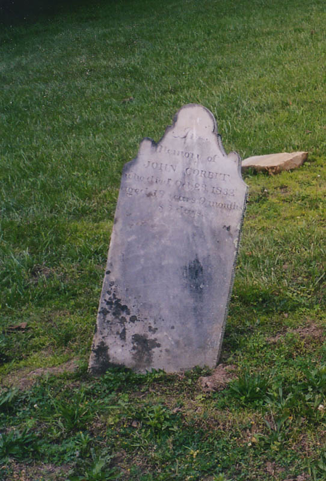
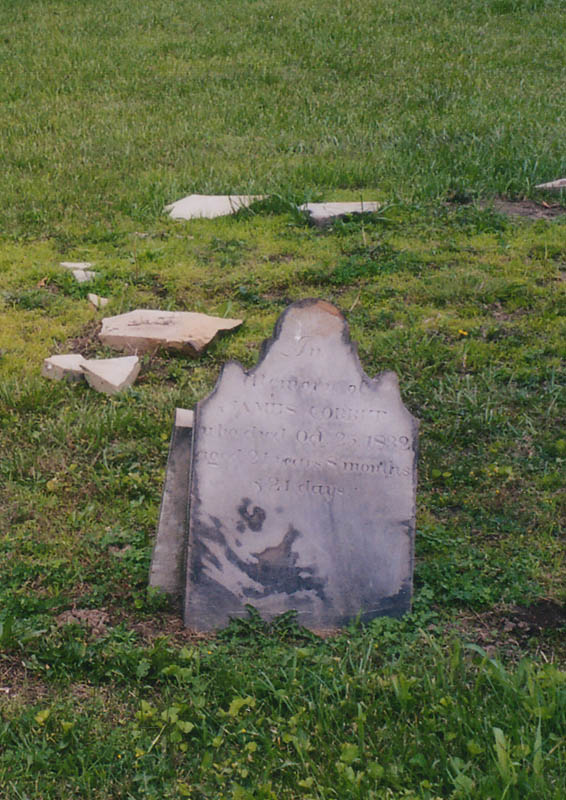
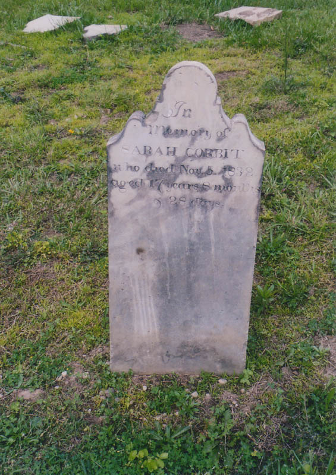

{kind=link}
{kind=link}
{kind=link}

"As we drove down the lane, we both began to feel as if we were being watched and we just had an eerie feeling. We stopped the car and rolled down the windows so that I could snap a pic before we got out of the car. I took a pic of the tree that is supposedly the one that Elizabeth hung herself from. Just as the flash went off, we heard something running full speed at the car! It was coming from the field on the opposite side of the rode from the cemetery. We started the car and began screaming like little kids, because when we looked behind us there were weird yellow eyes just standing at the end of the road!
"After I got calmed down enough to look at my camera, I checked the picture of the grave site and there in the tree was a small single orb of light.
We have not been back and we don't talk about it much. It was the scariest experience I have ever had with an entity and I have had several. Elizabeth is only telling people that she has been to the depths of hell and now she just wants to be left alone. I suggest that if you go there, be prepared for the scare of a lifetime!"
The Corbits, it turns out, succumbed to cholera, a disease which took the lives of many early Ohioans. A particularly bad outbreak swept southern Ohio in the fall of 1832. I've even spoken via e-mail to a descendent of the Corbits who cleared up some of the details for me. I'd still like to visit the Chillicothe library and page through the local newspapers for this period; maybe there's a mention of the unfortunate family.
I'd be interested to hear from you if you know anything else about this cemetery or the ghostly Elizabeth. My thanks to the Corbit descendent who filled me in about the cholera epidemic, and to Katydid for the photos. She's the one who noticed the Corbit tombstones.
- Rebecca A.
Sadly, the ghost did not appear to me and my ex-girlfriend when we visited the Mount Union-Pleasant Valley Cemetery in the late summer of 2003. One interesting and creepy thing we did notice was the presence of three old slate tombstones--side by side, same shape, same thin cursive inscription. They belong to three children of the same family: John, James, and Sarah Corbit. What's so strange about this is that all of them died young--and within the span of two weeks.



In Memory of
JOHN CORBIT
Who died Oct. 23, 1832
aged 19 years 9 months
& 3 days
In Memory of
JAMES CORBIT
Who died Oct. 25, 1832
aged 21 years 8 months
& 21 days
In Memory of
SARAH CORBIT
Who died Nov. 5, 1832
aged 17 years 8 months
& 28 days
Two brothers and a sister, all three of whom died in the fall of 1832. The nineteen-year-old middle child, John, died on October 23. Two days later the oldest, James, followed him at age twenty-one. And finally, eleven days later--probably after both boys had been buried--the seventeen-year-old sister died, on November 5. It's just impossible to imagine the pain this family experienced that fall.